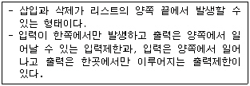
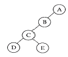
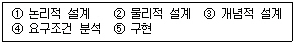
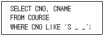
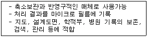
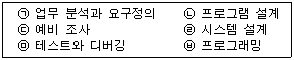
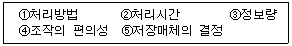
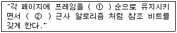
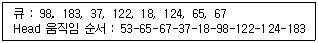

정보처리산업기사 (2002-09-08 기출문제)
1과목: 데이터 베이스
1. 다음 설명이 의미하는 것은?

- 스택
- 큐
- 다중스택
- 데크
(정답률: 60%)

2. 다음과 같은 이진트리를 후위순서로 순회할 때 네번째로 방문하는 노드는?

- A
- B
- C
- D
(정답률: 83%)
3. 데이터베이스의 장점에 해당되지 않는 것은?
- 데이터의 공유성
- 데이터의 중복성
- 데이터의 일관성
- 데이터의 무결성
(정답률: 80%)
4. 어떤 릴레이션에 존재하는 튜플의 갯수를 무엇이라 하는가?
- cardinality
- degree
- domain
- attribute
(정답률: 64%)
5. 인덱스나 데이터 파일을 블럭으로 구성하고 각 블록에는 추가로 삽입될 레코드를 감안하여 빈 공간을 미리 예비해 두는 인덱스 방법은?
- 정적 인덱스 방법
- 동적 인덱스 방법
- 집중화 인덱스 방법
- 보조 인덱스 방법
(정답률: 49%)
6. 데이터베이스 관리자가 기본 테이블에서 임의로 유도하여 만드는 테이블로서 사용자에게 접근이 허용된 자료만을 제한적으로 보여주기 위한 테이블을 무엇이라 하는가?
- 임시 테이블(temporary table)
- 뷰 테이블(view table)
- 색인 테이블(index table)
- 기본 테이블(base table)
(정답률: 75%)
7. 데이터베이스 관리시스템의 필수기능 중 다양한 응용 프로그램과 데이터베이스가 서로 인터페이스를 할 수 있는 방법을 제공하는 기능은?
- 정의 기능
- 조작 기능
- 제어 기능
- 저장 기능
(정답률: 30%)
8. 데이터베이스 관리자(DBA)의 역할 중 거리가 먼 것은?
- 사용자의 요구와 불평을 해결
- 시스템 감시 및 성능 분석
- 데이터베이스 설계와 운영
- 정보추출을 위한 데이터베이스 접근
(정답률: 55%)
9. FIFO(First In First Out) 방식의 작업 스케쥴링(Job - Scheduling)을 위한 자료구조로서 가장 적합한 것은?
- 스택(Stack)
- 스트링(String)
- 큐(Queue)
- 그래프(Graph)
(정답률: 70%)
10. 색인순차파일(ISAM : Indexed Sequential Access Method)에 관한 설명으로 옳지 않은 것은?
- 순차 처리와 랜덤 처리가 모두 가능하다.
- 레코드를 추가 및 삽입하는 경우, 파일 전체를 복사할 필요가 없다.
- 기본 구역(Prime data area), 색인 구역(Index - area), 오버플로우 구역(Overflow area)으로 구성되어 있다.
- 해시 함수를 사용하여 레코드를 저장할 위치를 결정한다.
(정답률: 36%)
11. 데이터베이스 설계 단계의 순서가 옳은 것은?

- ①→②→③→④→⑤
- ③→②→①→④→⑤
- ②→③→④→①→⑤
- ④→③→①→②→⑤
(정답률: 84%)
12. 한 릴레이션의 기본 키를 구성하는 어떠한 속성 값도 널(null) 값이나 중복 값을 가질 수 없다는 것을 의미하는 것은?
- 참조 무결성 제약조건
- 주소 무결성 제약 조건
- 원자값 무결성 제약조건
- 개체 무결성 제약조건
(정답률: 78%)
13. 다음 SQL 문에서 WHERE 절의 조건이 의미하는 것은?

- S로 시작되는 3문자의 CNO를 검색한다.
- S로 시작하는 모든 CNO를 검색한다.
- 문자열로만 이루어진 모든 CNO를 검색한다.
- S를 포함한 모든 CNO를 검색한다.
(정답률: 80%)
14. 오너-멤버(owner-member) 관계와 관련되는 논리적 데이터 모델은?
- 관계형 데이터 모델
- 네트워크 데이터 모델
- 계층형 데이터 모델
- 분산 데이터 모델
(정답률: 73%)
15. 주기억 장치 내에서 이루어지는 정렬 방법은?
- oscillating sort
- balanced sort
- polyphase sort
- insertion sort
(정답률: 58%)
16. 개체-관계 모델(E-R Model)에 대한 설명으로 옳지 않은 것은?
- 개체와 개체간의 관계를 도식화한다.
- 개체 집합을 사각형으로 표시한다.
- 관계를 다이아몬드로 표시한다.
- 일 대 일(1:1), 일 대 다(1:N) 관계 유형만 표현할 수 있다.
(정답률: 70%)
17. 레코드의 많은 자료 이동을 없애고 하나의 파일을 부분적으로 나누어가면서 정렬하는 방법으로 키를 기준으로 작은 값은 왼쪽에 큰 값은 오른쪽에 모이도록 서로 교환시키는 부분 교환 정렬법은?
- 퀵정렬(Quick sorting)
- 쉘정렬(Shell sorting)
- 삽입정렬(Insertion sorting)
- 선택정렬(Selection sorting)
(정답률: 30%)
18. 데이터베이스 내용에 대한 전체적인 뷰(view)라고 볼 수 있는 스키마는?
- 외부 스키마
- 개념 스키마
- 내부 스키마
- 서브 스키마
(정답률: 60%)
19. Which of the following is a standardized query language for requesting information from a database?
- SQL
- DML
- DLL
- DCL
(정답률: 70%)
20. Which one of the following is not a kind of schema?
- conceptual schema
- internal schema
- external schema
- sub schema
(정답률: 46%)
2과목: 전자 계산기 구조
21. 자료에 관한 설명 중 옳은 것은?
- EBCDIC 코드는 데이터 통신용으로 널리 쓰이며, 특히 소형 컴퓨터 용으로 쓰인다.
- ASCII 코드는 IBM사에서 개발한 것으로 대형 컴퓨터용에 쓰인다.
- 자료의 가장 작은 단위를 bit라 하며, bit는 binary digit의 약자이다.
- 부동소숫점 방식의 특징은 적은 bit를 차지함과 동시에 정밀도가 낮다는 것이다.
(정답률: 65%)
22. 다음 인터럽트(interrupt) 중에서 최우선권을 갖는 것은?
- power fail interrupt
- arithmetic overflow interrupt
- input output interrupt
- parity error interrupt
(정답률: 69%)
23. OP 코드가 5비트, Operand가 11비트인 명령어가 갖는 매크로 연산의 종류는 몇 가지인가?
- 5가지
- 32가지
- 128가지
- 2048가지
(정답률: 54%)
24. 인터럽트 수행 후에 처리되는 것은?
- 전원을 다시 동작시킨다.
- 모니터 화면에 인터럽트 종류를 디스플레이 한다.
- 메모리의 내용을 지워서 다른 프로그램이 적재될 수 있도록 한다.
- 인터럽트 처리시 보존시켰던 PC 및 제어상태 데이터를 PC와 제어상태 레지스터에 복구한다.
(정답률: 78%)
25. 마이크로 동작(Micro - operation)에 대한 정의로서 옳은 것은?
- 레지스터에 저장된 데이터에 의해서 이루어지는 동작
- 컴퓨터의 빠른 계산 동작
- 플립플롭 내에서 기억되는 동작
- 2진수 계산에 쓰이는 동작
(정답률: 61%)
26. 주기억 장치에 기억된 명령을 꺼내서 해독하고, 시스템 전체에 지시 신호를 내는 것은?
- 채널(Channel)
- 제어 기구(control unit)
- 연산 논리 기구(ALU)
- 입·출력 장치(I/O unit)
(정답률: 54%)
27. JK플립플롭의 트리거 입력과 상태 전환조건을 설명한 것 중 옳지 않은 것은?
- J=0, K=0일 때는 반전치 않는다.
- J=0, K=1일 때 0으로 되돌아간다.
- J=1, K=0일 때는 1로 된다.
- J=1, K=0일 때는 반전된다.
(정답률: 52%)
28. 메모리의 내용을 레지스터에 전달하는 기능은?
- Load
- Fetch
- Transfer
- Store
(정답률: 56%)
29. 컴퓨터 주기억장치의 용량이 256MB라면 주소 버스는 최소한 몇 bit이어야 하는가?
- 24bit
- 26bit
- 28bit
- 30bit
(정답률: 46%)
30. -14를 부호화된 2의 보수 표현법으로 표현된 것은? (단, 8bit로)
- 10001110
- 11100011
- 11110010
- 11111001
(정답률: 53%)
31. 명령(instruction)이 실행되기 위해 가장 우선적으로 처리되어야 하는 마이크로 오퍼레이션은?
- PC → MAR
- PC → MBR
- PC → CPU
- PC → M
(정답률: 54%)
32. 2진수 (1001011)2의 2의 보수(2's Complement)는?
- 0110100
- 1110100
- 1110101
- 0110101
(정답률: 60%)
33. 명령어의 형식 가운데 연산에 사용된 모든 피 연산자 값을 상실하는 명령어 형식은?
- 3-주소 형식 명령어
- 2-주소 형식 명령어
- 1-주소 형식 명령어
- 0-주소 형식 명령어
(정답률: 40%)
34. 선형구조가 아닌 것은?
- stack
- queue
- deque
- link
(정답률: 73%)
35. 2의 보수 표현 방식으로 8비트의 기억 공간에 정수를 표현할 때 표현 가능 범위는?
- -27 ∼ +27
- -28 ∼ +28
- -27 ∼ +(27-1)
- -28 ∼ +(28-1)
(정답률: 46%)
36. 보조기억장치로 부적합한 것은?
- 자기 디스크
- CD-ROM
- 자기 테이프
- SDRAM
(정답률: 55%)
37. 산술연산과 논리연산 동작을 수행한 후 결과를 축적하는 register를 무엇이라 하는가?
- 누산기
- 인덱스 레지스터
- 플래그 레지스터
- RAM
(정답률: 79%)
38. 입력번지 선이 8개, 출력 데이터 선이 8개인 ROM의 기억 용량은?
- 64 바이트
- 256 바이트
- 512 바이트
- 1024 바이트
(정답률: 45%)
39. 대용량 메모리를 내장한 제품 중 프로그램 되어 있는 ROM은?
- PROM
- Mask ROM
- EPROM
- EAROM
(정답률: 50%)
40. 하나의 AND 회로와 E-OR 회로를 조합한 회로는?
- 반가산기
- 전가산기
- 래치
- 플립플롭
(정답률: 69%)
3과목: 시스템분석설계
41. 시스템 분석가로서 훌륭한 분석을 하기 위한 기본 사항으로 거리가 먼 것은?
- 분석가는 창조성이 있어야 한다.
- 분석가는 시간배정과 계획 등을 빠른 시간 내에 파악할 수 있어야 한다.
- 분석가는 컴퓨터장치와 소프트웨어에 대한 지식을 가져야 한다.
- 분석가는 기계 중심적이어야 한다.
(정답률: 65%)
42. 아래와 같은 특징을 갖는 출력 매체 시스템은?

- CRT 출력 시스템
- COM 시스템
- X-Y 플로터
- 음성 출력 시스템
(정답률: 66%)
43. 시스템의 기본 5가지 요소로 옳게 짝지어진 것은?
- 입력, 출력, 처리, 피드백, 제어
- 입력, 출력, 연산, 처리, 피드백
- 입력, 출력, 제어, 연산, 피드백
- 입력, 출력, 처리, 피드백, 연산
(정답률: 42%)
44. 프로그래밍 지시서에 포함되지 않는 것은?
- PROGRAM-ID
- 입출력 일람
- 프로세스 흐름도
- 처리 명세
(정답률: 22%)
45. 자료사전(DD : Data Dictionary)에 대한 설명으로 가장 적절한 것은?
- 자료가 발생지에서 종착지까지 처리되고 저장되는 모든 활동 사항을 도형을 이용하여 나타내는 구조적 분석용 도구
- 시스템과 관련된 모든 자료의 명세와 자료 속성을 파악할 수 있도록 조직화한 도구
- 처리절차나 논리적 활동을 기술하는 도구로 구조적 언어나 의사 결정표의 형태로 구성된 것
- 크고 복잡한 문제를 해결할 때 이해하기 쉬운 일련의 작은 단위로 나눈 뒤 차례로 풀어나가는 과정을 모은 것
(정답률: 58%)
46. 자료 흐름도(DFD : Data flow diagram)의 구성 요소가 아닌 것은?
- 시작점/종착점
- 피드백
- 자료 흐름
- 데이터 저장소
(정답률: 55%)
47. 코드화 대상 항목을 대분류, 중분류, 소분류 등으로 구분하여 각 그룹 내에서 순서대로 번호를 부여하여 분류하는 코드의 종류는?
- 구분 코드(Block code)
- 10진 분류 코드(Decimal code)
- 합성 코드(Combined code)
- 그룹 분류 코드(Group classification code)
(정답률: 70%)
48. 시스템에 대한 정의로 옳지 않은 것은?
- 예정된 기능을 수행하기 위하여 설계된 상호작용을 갖는 요소의 유기적 집합체이다.
- 어떤 목적을 위하여 하나 이상의 기능요소가 상호 관련하여 유기적으로 결합된 것이다.
- 공통의 목적에 의하여 공통의 목적에 기여할 수 있는 많은 이질부문으로 구성되는 복잡한 단일체이다.
- 상호 관련이 없는 구성요소가 조합되어 어떤 목적을 위하여 유기적으로 결합된 것이다.
(정답률: 42%)
49. 다음 중 가장 강한 결합도는?
- 외부 결합
- 자료 결합
- 제어 결합
- 스템프 결합
(정답률: 30%)
50. 시스템 개발 순서로 가장 적합한 것은?

- (ㄷ)(ㄱ)(ㄹ)(ㄴ)㉥(ㅁ)
- (ㄷ)(ㄴ)(ㄹ)㉥(ㄱ)(ㅁ)
- (ㄷ)(ㄹ)㉥(ㄴ)(ㄱ)(ㅁ)
- (ㄷ)㉥(ㄹ)(ㄴ)(ㄱ)(ㅁ)
(정답률: 80%)
51. 시스템의 문서화 목적으로 거리가 먼 것은?
- 시스템 개발 후 유지 보수가 용이하다.
- 시스템 개발팀에서 운용팀으로 인계 인수를 쉽게 할 수 있다.
- 시스템 개발 중 추가 변경에 따른 혼란을 방지할 수 있다.
- 문제 발생시 책임 한계를 명확히 할 수 있다.
(정답률: 72%)
52. 코드(code) 설계시 유의 사항으로 거리가 먼 것은?
- 컴퓨터 처리에 적합하여야 한다.
- 공통성이 있어야 한다.
- 다양성이 있어야 한다.
- 확장성이 있어야 한다.
(정답률: 50%)
53. HIPO의 특징이 아닌 것은?
- 문서화
- 상향식
- 계층구조
- 기능 중심
(정답률: 57%)
54. 출력 내용에 대한 설계 사항에 해당되지 않는 것은?
- 출력할 항목을 결정한다.
- 출력 항목의 배열 순서, 크기, 자리수를 결정한다.
- 출력 매체와 장치를 결정한다.
- 출력 항목을 숫자, 영문자, 한글, 한자 중 어느 것으로 할 것인지를 결정한다.
(정답률: 40%)
55. 마스터 파일의 내용을 변동 파일에 의해 추가, 삭제, 수정 등의 작업을 하여 새로운 파일을 만드는 처리 패턴은?
- update
- matching
- extract
- merge
(정답률: 67%)
56. 객체에 정의된 연산을 의미하며, 객체의 상태를 참조 및 변경하는 수단은?
- 클래스
- 상속
- 메소드
- 엔티티
(정답률: 62%)
57. 색인 순차 파일의 색인 영역에 해당하지 않는 것은?
- Track Index Area
- Cylinder Index Area
- Master Index Area
- Overflow Index Area
(정답률: 61%)
58. 구조적 프로그램의 기본 구조에 해당하지 않는 것은?
- 순차(sequence) 구조
- 반복(repetition) 구조
- 조건(condition) 구조
- 일괄(batch) 구조
(정답률: 56%)
59. 코드의 기본적 기능이 아닌 것은?
- 표준화
- 분류
- 복잡성
- 암호화
(정답률: 67%)
60. 파일 설계 단계 중 아래의 항목들은 어느 단계에 해당하는가?

- 파일항목의 검토
- 파일의 특성조사
- 파일매체의 검토
- 파일편성법의 검토
(정답률: 34%)
4과목: 운영체제
61. 기억장치의 가변 분할 방법에서 유휴공간 중에서 요구량보다 큰 공간 중 가장 작은 공간을 선택하는 알고리즘은?
- first-fit
- best-fit
- least-fit
- worst-fit
(정답률: 55%)
62. Round-Robin 스케쥴링에 대한 설명으로 틀린 것은?
- 프로세스들이 배당 시간내에 작업을 완료되지 못하면 폐기된다.
- 프로세스들이 중앙처리장치에서 시간량에 제한을 받는다.
- 시분할 시스템에 효과적이다.
- 선점형(preemptive) 기법이다.
(정답률: 53%)
63. UNIX의 커널(Kernel)에 대한 설명으로 옳지 않은 것은?
- 명령어를 해석하여 실행한다.
- 파일 시스템의 접근 권한을 처리한다.
- 시스템의 기억장소와 각 프로세스의 배당을 관리한다
- 시스템에서 처리되는 각종 데이터를 장치간에 전송하고 변환한다.
(정답률: 54%)
64. 프로세스가 기억장치내의 정보를 균일하게 액세스하는 것이 아니라, 어느 한 순간에 특정부분을 집중적으로 참조한다는 의미는?
- 구역성(locality)
- 스래싱(thrashing)
- 워킹세트(working set)
- 프리페이징(prepaging)
(정답률: 58%)
65. 운영체제의 목적으로 거리가 먼 것은?
- 시스템 성능 향상
- 처리량 향상
- 응답시간 증가
- 신뢰성 향상
(정답률: 78%)
66. 하나의 기억 장소가 참조되면 그 근처의 기억장소가 계속 참조되는 것을 공간 구역성이라고 한다. 공간 구역성과 관련이 적은 것은?
- 스택
- 배열
- 순차적 코드
- 가까운 위치에서 선언된 관련있는 변수들
(정답률: 42%)
67. 다음은 이차 기회(second chance) 알고리즘에 대한 설명이다. 빈 칸에 알맞은 것은?

- ① FIFO ② LFU
- ① FIFO ② LRU
- ① LFU ② LRU
- ① LRU ② NUR
(정답률: 45%)
68. HRN 스케줄링에서 우선순위 결정의 계산식은?
- (대기시간 + 실행시간) / 실행시간
- (대기시간 + 서비스 시간) / 실행시간
- (대기시간 + 서비스 시간) / 서비스 시간
- (실행시간 + 서비스 시간) / 서비스 시간
(정답률: 65%)
69. 특정 레코드를 검색하기 위하여 키(Key)와 보조기억 장치 사이의 물리적인 주소로 변환할 수 있는 사상 함수(mapping function)가 필요한 파일은?
- 순차 파일
- 인덱스된 순차파일
- 직접 파일
- 분할 파일
(정답률: 35%)
70. 유닉스에서 inode는 파일을 구성하는 모든 물리적 블록들의 위치를 알 수 있는 정보를 가지고 있다. inode가 나타내는 정보가 아닌 것은?
- 소유자의 사용자 식별
- 소유자가 속한 그룹의 식별
- 파일에 대한 링크의 수
- 파일의 우선 순위
(정답률: 42%)
71. Queue에 아래와 같은 트랙요청 정보가 들어 있고 Head의 현재 위치가 Track 53일 때, Head가 움직이는 순서가 아래와 같다면 무슨 스케줄링 기법을 사용했는가?

- SCAN
- C-SCAN
- SSTF
- Sector Queuing
(정답률: 62%)
72. 운영체제에 대한 설명으로 옳지 않은 것은?
- 다중 사용자와 다중 응용프로그램 환경 하에서 자원의 현재 상태를 파악하고 자원 분배를 위한 스케줄링을 담당한다.
- CPU, 메모리 공간, 기억 장치, 입출력 장치, 정보 관리 등의 자원을 관리한다.
- 운영체제의 종류로는 매크로 프로세서, 어셈블러, 컴파일러 등이 있다.
- 사용자가 컴퓨터 하드웨어를 사용하기 쉽도록 컴퓨터와 사용자간의 인터페이스를 지원한다.
(정답률: 68%)
73. 교착상태(DEAD LOCK) 발생의 필요조건이 아닌 것은?
- MUTUAL EXCLUSION
- PREEMPTION
- CIRCULAR WAIT
- HOLD & WAIT
(정답률: 62%)
74. 분산 처리 시스템에 관한 설명으로 옳지 않은 것은?
- 약결합(loosely-coupled)으로 볼 수 있다.
- 업무량 증가에 따른 점진적인 확장이 용이하다.
- 높은 보안성이 유지된다.
- 제한된 자원을 여러 지역에서 공유 가능하다.
(정답률: 71%)
75. 스케줄링에 대한 설명으로 옳지 않은 것은?
- 무한 연기는 회피해야 한다.
- 단위시간당 처리량을 극대화해야 한다.
- 모든 프로세스에게 공정하게 적용되어야 하기 때문에 우선 순위제도는 불필요하다.
- 오버헤드를 최소화시켜야 한다.
(정답률: 80%)
76. 분산 처리시스템에서 완전연결(fully connected) 구조에 대한 설명으로 옳은 것은?
- 각 노드가 시스템내의 모든 노드와 직접 연결되어 있다.
- 통신 전달이 매우 느리다.
- 비용이 적게 든다.
- 트리와 같은 형태로 구성되어 있다.
(정답률: 49%)
77. 기억공간을 할당하고 회수하는 작업이 자주 발생함에 따라 디스크의 기억공간이 점차 단편화되어, 파일이 널리 분산되어 있는 블록들에 분산 저장되는 경우, 이런 문제를 해결하기 위한 적절한 방법은?
- allocation
- garbage collection
- fragmentation
- insertion
(정답률: 41%)
78. 번호가 0부터 199인 200개의 트랙을 가진 유동 헤드 디스크가 있다. 헤드의 현재 위치는 트랙 143 이며 트랙의 바깥쪽 방향으로 진행하고 있다고 가정할 경우, 요청 큐가 FCFS 순으로 147, 91, 177, 94, 150, 102, 175, 130 과 같을 때, SCAN 스케줄링 알고리즘을 사용했을 때 헤드의 총 이동량은 얼마인가?
- 164
- 154
- 144
- 174
(정답률: 21%)
79. 인터럽터 시계의 시간할당량이 종료될 때 발생되는 인터럽트 종류는?
- SVC interrupt
- Program Check interrupt
- I/O interrupt
- External interrupt
(정답률: 34%)
80. 다음 표와 같이 작업이 제출되었을 때, SJF 정책을 사용하여 스케줄링하면 평균 turnaround 시간은 얼마인가?(현재 표가 누락되어 있습니다. 정답은 3번입니다. 추후 표 데이터를 추가해 두겠습니다.)
- 6.33
- 6.67
- 7
- 7.5
(정답률: 60%)
5과목: 정보통신개론
81. 초당 발생한 신호의 변화 상태로 나타내는 변조속도의 기본 단위는?
- 비트(bit)
- 보(baud)
- 패킷(packet)
- 셀(cell)
(정답률: 60%)
82. 위성통신의 특징을 잘못 표현한 것은?
- 광대역 통신이 가능하다.
- 광범위한 지역에 서비스를 제공할 수 있다.
- 대용량, 고품질의 정보 전송이 가능하다.
- 전파지연이 없으나 감쇄현상이 나타날 수 있다.
(정답률: 62%)
83. 운영체제를 구성하는 부분을 두 가지로 나누었을 때 가장 적합한 것은?
- 시스템 프로그램과 응용 프로그램
- 제어 프로그램과 처리 프로그램
- 하드웨어와 소프트웨어
- 중앙처리장치와 주변장치
(정답률: 32%)
84. 분리된 두장치간에 정보를 교대로 데이타를 교환하는 통신방식을 무엇이라 하는가?
- 단방향통신방식
- 반이중통신방식
- 전이중통신방식
- 포인트 투 포인트방식
(정답률: 59%)
85. 공중통신회선에 교환설비, 컴퓨터 및 단말기등을 접속시켜 새로운 부가기능을 제공하는 통신망은?
- LAN
- VAN
- ISDN
- WAN
(정답률: 41%)
86. LAN(Local Area Network)은 사무실내의 정보유통을 위한 유효한 수단으로서 여러 가지 장점을 가지고 있는데, 다음 중 장점에 포함되지 않는 것은?
- 다른 기종간의 통신에 있어서 사무처리의 능률화
- 파일의 공유에 따른 처리의 효율화
- 집중처리의 실현으로 처리시간 단축화
- 기기자원의 공유에 따른 이용효율의 향상
(정답률: 52%)
87. 다음 통신선로 중에서 근거리 네트워크(LAN)에서 사용되지 않는 것은?
- 나선
- 꼬임선
- 동축케이블
- 광섬유
(정답률: 42%)
88. 데이터의 충돌을 막기 위해 송신 데이터가 없을 때에만 데이터를 송신하고, 다른 장비가 송신중일 때에는 송신을 중단하며 일정시간 간격을 두고 대기하였다가 다시 송신하는 방식을 무엇이라 하는가?
- 토큰 순회버스
- 토큰 순회 링
- CSMA/CD
- CSMA/CA
(정답률: 52%)
89. 다음 중 프로토콜의 구성 요소가 아닌 것은?
- 구문(syntax)
- 의미(semantic)
- 순서(timing)
- 접속(connection)
(정답률: 56%)
90. OSI 7-layer 중 표현계층의 기능과 거리가 먼 것은?
- data 표현 형식 제어
- data의 암호화
- data의 전송 제어
- text의 압축수행
(정답률: 49%)
91. CATV의 일반적인 특징으로 잘못된 것은?
- 단방향통신이다.
- 다채널이다.
- 부가통신서비스를 할 수 있다.
- 수용자의 범위가 한정적이다.
(정답률: 25%)
92. 다음 중 정보통신의 의미를 가장 폭넓게 표현한 것은?
- 컴퓨터와 통신회선의 결합으로 전송기능에 통신처리 기능이 추가된 데이터 통신
- 컴퓨터와 통신기술이 결합된 것으로 정보처리가 가능한 컴퓨터 통신
- 정보통신망을 이용한 체계적인 정보의 전송을 위한 통신
- 컴퓨터와 통신기술의 결합에 의해 통신처리기능과 정보처리기능은 물론 정보의 변환, 저장과정이 추가된 형태의 통신
(정답률: 60%)
93. ISDN 채널 중 기본적인 이용자 채널로 PCM 화된 디지털 음성이나 회선교환 혹은 패킷교환등에 이용되는 채널은?
- A채널
- B채널
- C채널
- D채널
(정답률: 35%)
94. 프로토콜의 계층화에 대한 장점이 아닌 것은?
- 전체적인 오버헤드(over head)가 증가한다.
- 모듈화에 의한 전체 설계가 쉽다.
- 이 기종간의 호환성 유지가 쉽다.
- 한 계층을 수정할 때 다른 계층에 영향을 주지 않는다.
(정답률: 60%)
95. 보오(Baud) 속도가 3,200 보오이며, 트리비트(Tri-bit)를 사용하는 경우 몇 bps가 되는가?
- 1200
- 2400
- 4800
- 9600
(정답률: 65%)
96. 종합정보통신망(ISDN)에 대한 설명으로 부적당한 것은?
- 음성 및 비음성 서비스를 포함한 광범위한 서비스를 제공한다.
- 기능에 의해 기본통신 계층, 네트워크 계층, 통신처리 계층, 정보처리 계층으로 분류된다.
- 64Kbps의 디지털 기본 접속기능을 제공한다.
- OSI 참조모델에 정의된 계층화된 프로토콜 구조가 적용된다.
(정답률: 24%)
97. 정보통신 System의 구성요소중 정보 전송계 요소에 맞지 않는 것은?
- 신호변환장치
- 전송회선
- 중앙처리장치
- 통신제어장치
(정답률: 66%)
98. 정보통신시스템의 통신회선 종단에 위치한 신호변환장치 중 디지털 전송로에서 단극성 신호를 쌍극성 신호로 변환이 가능한 장치는?
- 지능 모뎀
- 음향결합기
- 코덱
- 디지털 서비스 유니트
(정답률: 39%)
99. 다음 중 정보통신망의 3대 구성요소가 아닌 것은?
- 단말장치
- 교환장치
- 전송장치
- 저장장치
(정답률: 57%)
100. DSU(Digital Service Unit)의 역할은?
- 아날로그 데이터를 디지털 신호로 변환시킨다.
- 디지털 신호를 아날로그 데이터로 변환시킨다.
- 아날로그 신호를 디지털 데이터로 변환시킨다.
- 디지털 데이터를 디지털 신호로 변환시킨다.
(정답률: 57%)